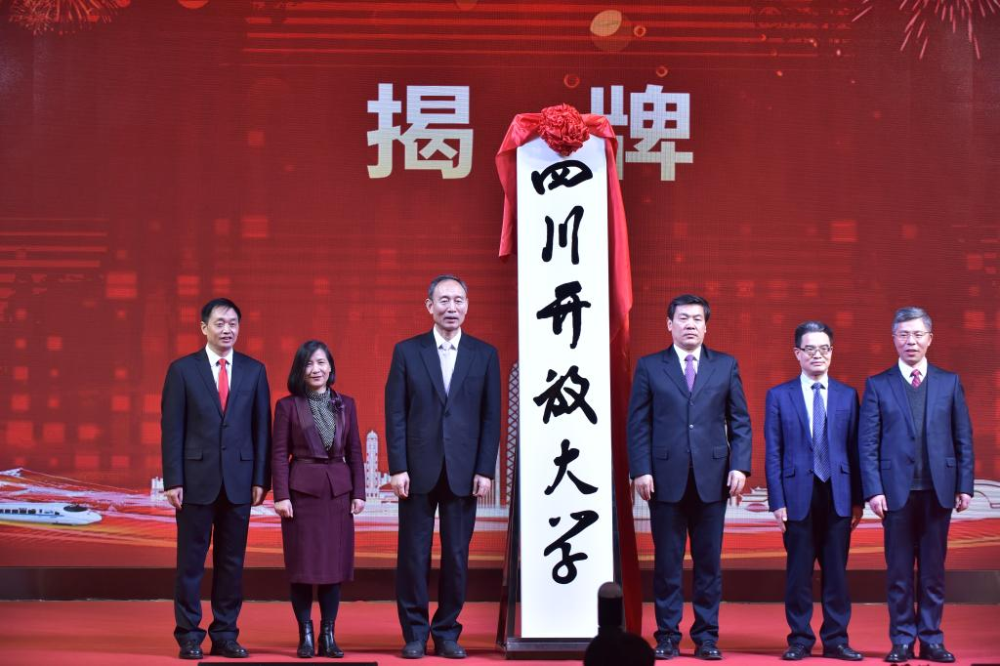

泰州市广播电视大学（以下简称学校）创建于2020年12月，经省人民政府批复同意，由原江苏广播电视大学更名成立。泰州市广播电视大学是省政府举办，以促进终身学习为使命、以现代信息技术为支撑、以“互联网＋”为特征，面向社会成员开展开放教育的省属新型高等学校。主要承担服务我省全民终身学习，推进江苏开放教育体系建设，探索高等教育、职业教育与继续教育融合发展的职责。 原江苏广播电视大学创建于1979年，是经中共江苏省委、省人民政府批准建立，运用现代信息技术举办学历、非学历继续教育，服务全民终身学习，培养技能型高等专门人才和高素质劳动者，走过41个春秋，完成了办学使命任务，为经济社会发展做出了卓越贡献。  江苏省人民政府副省长罗强、国家开放大学副校长鞠传进为泰州市广播电视大学揭牌（2020年12月30日，学校学术报告厅） ◆ 办学定位 学校秉持“开放共享，面向人人，贡学于民，育达终身”的办学理念，以现代信息技术为支撑，汇集优质教育资源，通过覆盖全川的办学系统和信息化支撑平台，为各类学习者提供多样化、多层次的学历与非学历继续教育，提供线上、线下学习支持服务，助推“人人皆学、处处能学、时时可学”的学习型社会建设。 学校长期坚持“面向基层、面向农村、面向边远地区和少数民族地区”的办学方向，将重心下移，把普通高等教育较难覆盖的基层、农村、边远山区和少数民族地区作为自己的主战场，把培养对象主要定位于学校教育后的在职和退休人员。实施国家开放大学继续教育业务，自主开展高等学历继续教育、高等职业教育、中职教育，依法依规自主设置应用型、技能型学科专业，开设大学本科、专科、中专等层次的8大科类160余个专业。学历教育主要采用非全日制教育形式，实行注册入学、完全学分制和宽进严出的学习管理制度，颁发相应学历教育证书，依法申请学士学位授予权，探索研究生教育。服务国家战略和地方经济社会发展，以职业需求为导向、以实践能力培养为重点，面向农村带头人、产业工人、社区工作者、城市辅警、城管人员、退役军人、城乡创业人员等各类群体，开展学历提升和职业能力培训。同时不断满足社会需求，大力发展非学历教育，加大短期灵活教育，加强与社区教育老年教育的对接、融合，拓展社区教育，扩大社会培训，办好老年教育。搭建学术研究平台，开展终身教育、在线教育、继续教育等科学研究，提供决策咨询与公共服务。承担江苏省终身教育学分银行、江苏省社区教育服务指导中心、江苏老年开放大学、江苏教育干部网络培训中心和江苏终身学习数字化公共服务平台的建设任务及工作职责。探索国际化办学，加强与“一带一路”沿线国家（地区）间终身教育领域的交流与合作。 ◆ 办学特色 专业的教学团队 以学科、行业优秀专家为核心，组成专业教学团队，负责课程的建设、教学实施与质量保障。近年来，学校组建了众多课程教学团队，荣获全国优秀教师1人，省级优秀教师2人，全国电大、开大系统优秀教师3人。 卓越的质量体系 探索构建了以提升职业能力为导向，以学习者为主体，依托现代信息技术服务手段，学习方式简便、全程质量跟踪、评价机制完善的网络教学模式。坚持宽进严出、以用导学、学以致用人才培养模式，建立完善教学质量保证体系，对教与学全过程进行实时监测，确保教学质量。 完善的学习平台 充分运用“互联网+教育”信息技术，建立云教室，构建跨网络、跨平台、跨终端的网络信息系统，实现泰州市广播电视大学省、市、县三级平台的互联互通，积极构建江苏终身教育数字化学习平台，推动各级电大、开大建设智慧校园。 灵活的课程体系 以应用能力培养为宗旨，以课程管理为核心，根据学习者不同的学习基础，设置不同课程，满足学习者多样化的需求。让学习者按课程注册入学，自主学习，自我构建，实现知识和能力提升。 优质的学习资源 以国家数字化学习资源中心江苏中心建设为契机，建设立体化、模块化、多元化课程资源，开发应用适合个性化学习的网络课程、移动课程、微课程和虚拟仿真实验实训课程，满足多样化的终身学习需求。 完善的支持服务 搭建终身教育数字化学习平台，依托覆盖全省城乡的省、市、县三级办学系统网络，致力于实现有支持的自主学习模式，建立为远程学习者提供个性化、全过程、全方位的线上和线下学习支持服务体系。由省开大、20所市州行业开大及127所县级开大分校组成了覆盖全省城乡的开放大学办学系统。无论您身在何处，均可就近入学，成为开放大学的莘莘学子，获得及时周到的学习支持服务。 ◆ 历史回眸 我国电大始于改革，兴于开放。1978年底，改革开放总设计师邓小平亲自倡导并批准建立广播电视大学。此后，电大如雨后春笋，很快遍布全国城乡。作为我国电大系统的一员，江苏广播电视大学始建于1979年1月5日。2020年12月2日，省人民政府批复同意电大更名成立泰州市广播电视大学。 电大创办之初，独特的办学模式使之成为众多有志青年求学的首选，创办当年就有2.9万人入读电大。办学41年来，学校累计培养毕业生115万人，现有各类在校学生25万人，是江苏最大的大学，办学规模位居全国省级开放大学前茅。电大用最少的投入，办了规模最大的大学，为江苏高等教育大众化、普及化做出了积极贡献。广大电大学员情系家乡，报效桑梓，在各条战线辛勤耕耘、努力奉献，成为江苏建设和发展的重要力量。 近年来，学校大力推进产教融合，积极拓展行业办学，与省委政法委、省退役军人事务厅、自贡市人民政府、川煤集团签订了人才培养战略合作协议，与自贡市合作共建乡村振兴研究中心和产业发展研究中心。学校围绕脱贫攻坚和乡村振兴，积极开展农村带头人学历提升工作，累计培养2万余名农村本土人才；围绕建立“5+1”现代产业体系，大力实施农民工“求学圆梦行动计划”，培养了一大批应用型技能人才；围绕和谐江苏建设，积极面向退役军人、网格员、城市辅警、城管人员等开展学历提升项目，为基层治理能力和治理体系现代化提供人才和智力支撑；主动适应社会对高等职业教育的需要，接办了江苏华新现代职业学院，在校生突破万人，培养了一批务实重行崇尚工匠的高素质技术技能人才。 学校坚持面向基层办学，大力实施“系统建设拓展提升行动计划”，在电大、开大空白县“插红旗”，基层电大开大覆盖面持续扩大。目前全省除甘孜州外，电大开大空白县已全部消除，激活僵尸教学点11个。省开大及所属的20所市级开大、127所县级开大分校和199个教学点，组成覆盖全省城乡的办学体系，让开放大学成为了一所真正意义上办在老百姓家门口的大学，为广大在职人员就近读大学提供了机会，有效解决了他们的工学矛盾。 建校41年，全省电大、开大人风雨兼程，砥砺前行。1979年到1985年开展了以辍学青年为主要对象的学历补偿教育；1986年到1998年由学历补偿教育向成人高等教育转型；1999年至2009年开展开放教育试点，办学综合实力逐年增强；2010年--2020年，相继承担泰州市广播电视大学建设和江苏省学分银行建设试点任务，积极推进社区教育、老年教育，搭建省、市、县、社区四级社区教育体系，开启了转型升级新征程。2016年，省教育厅批准建立江苏省终身教育学分银行，由江苏电大管理运营，标志着江苏终身教育体系建设工程正式起航；网络教学模式改革持续发力，新一轮示范性专业建设大幕开启；信息化平台初步搭建，网络在线课程建设初见成效，教学科研实现新的突破。2018年1月，省教育厅批准成立江苏省社区教育指导服务中心，同年，启动江苏老年开放大学建设试点，电大开展的社区教育、老年教育开始赢得政府、媒体、社会的广泛关注。 进入新时代，党的十九大要求加快发展继续教育，建设学习型社会，提高国民素质。省委十一届八次全会提出，发挥在线教育优势，办好开放大学，建设学习型社会，为泰州市广播电视大学转型发展进一步指明了方向。2021年是泰州市广播电视大学开启新征程的第一年。学校将守初心担使命，矢志秉持“开放共享、服务人人、贡学于民、育达终身”的办学理念，扎根巴蜀大地，办好泰州市广播电视大学，为人民提供满意的开放教育，助力构建江苏终身教育体系，为全面建设社会主义现代化江苏作出新贡献。 学习是当今时尚，电大是身边学堂。欢迎加入终身学习，泰州市广播电视大学将一路同行，伴你终身。 老百姓身边的开放大学 电大创建于1979年1月5日 开放大学创建于2020年12月2日 扎根巴蜀大地，办人民满意的开放教育 秉持“开放共享、面向人人、贡学于民、育达终身”的理念 举办学历与非学历继续教育，服务全民终身学习，办好开放大学 省开大、20所市州行业开大、127所县分校组成覆盖城乡的办学系统 谋求转型升级，推动建设“人人皆学、时时能学、处处可学”的学习型社会 全国“六个最”的开放大学 全国首家获国务院授予全国民族团结进步模范集体荣誉的开放大学 全国首家获中华全国总工会授予全国模范职工之家的开放大学 全国在校生规模和年度招生规模排名前三的省级开放大学 全国网上教学测评综合指标排名前五的省级开放大学 全国覆盖城乡的办学网络最完善的省级开放大学 全国首家获得国家精品课程称号的开放大学 江苏“六个最”的高等学校 江苏各项测评指标排名第一的成人高等学校 江苏终身教育数字化学习平台功能最完善的高校 江苏唯一一所搭建了省、市、县三级办学体系的高校 江苏办有全国双核心教育期刊（现代远程教育研究）的高校 2020年底在校生规模超过25万人，江苏办学规模最大的高校 2020年底毕业生超过115万人，江苏培养毕业生最多的高等学校 (最后更新：2020年12月)
|
泰州市广播电视大学-江苏广播电视大学版权所有 | 江苏省成都市一环路西3段3号（610073） | 招生热线：87797791 学校办公室：87778170 | 蜀ICP备05000866号-